The race for large-capacity battery cells in the energy storage industry has entered a new phase. If 2024 was dominated by 314Ah cells, then by 2026, 587Ah cells have become the new top priority for manufacturers. Today, let's talk about this "giant" in the energy storage industry.
The emergence of the 587Ah format signifies a departure from traditional battery development, where capacity increases were often incremental and decoupled from system-level constraints. Instead, the 587Ah designation is an optimized engineering value derived from a multi-objective logic: balancing cell capacity and quantity configuration against the constraints of 1500V Power Conversion Systems (PCS), standard 20-foot container structures, and the rigorous weight limits imposed by international transportation regulations.
From 280Ah to 587Ah: The "Three-Stage Leap" in Large Battery Cells
To understand why the 587Ah battery is so popular, we need to look at the evolution of energy storage cells.
A few years ago, 280Ah cells were the mainstream in the market, but with technological advancements and the need to reduce costs, their position was quickly replaced. By 2025, 314Ah cells had taken the lead with better cost performance, but this didn't last long, as even bigger competitors had already entered the market.
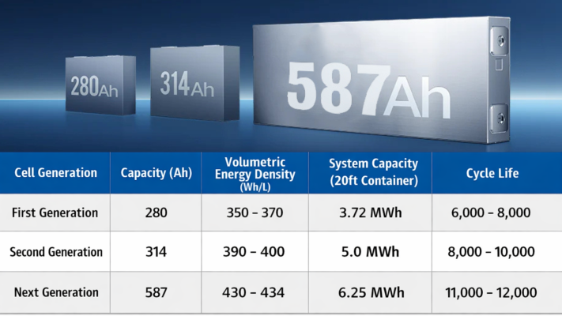
In 2025, CATL took the lead in launching a 587Ah high-capacity energy storage cell, raising the industry standard to a new level. Following suit, companies such as Haichen Energy Storage, Ruipu Lanjun, Ganfeng Lithium Battery, Haiji Energy Storage, and Penghui Energy Storage all launched their own 587Ah products.
Three major advantages of 587Ah battery cells
First, the system cost is lower. This is the most direct driving force. Using one 587Ah cell is equivalent to using one more 314Ah cell. Reducing the number of cells means that the amount of structural components, connectors, and BMS (Battery Management System) used is also reduced accordingly, and the cost of the entire energy storage system can be reduced by 10%-15%.
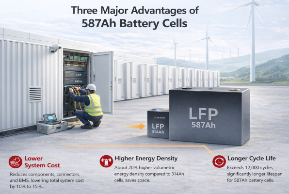
Second, it has a higher energy density. The volumetric energy density of a 587Ah cell is about 20% higher than that of a 314Ah cell. For the same energy storage capacity, energy storage cabinets made with 587Ah cells are smaller and require less floor space. This is especially important for commercial and industrial energy storage scenarios where land costs are increasingly high.
Third, longer cycle life. According to test data, the cycle life of 587Ah cells generally exceeds 12,000 cycles, a significant improvement over the previous generation. Longer life means lower cost per kilowatt-hour, which is crucial for energy storage projects requiring long-term operation.
Comparative Evolution of LFP Cell Specifications
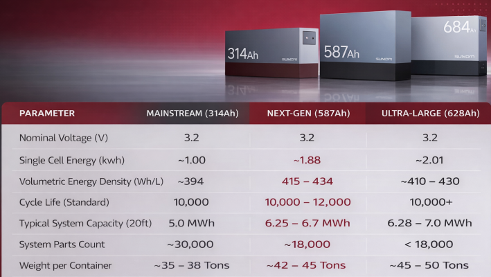
The data suggests that 587Ah is the "golden balance point" for current infrastructure. While formats like 628Ah or 700Ah+ offer even higher capacity, they risk exceeding the 45-ton weight limit when fully integrated with liquid cooling and fire suppression systems, or they require specialized, non-standard transport arrangements.
Who are using 587Ah battery cells?
Currently, 587Ah battery cells are mainly used in three scenarios:
Grid-side energy storage represents the largest market. Grids require large-scale, long duration energy storage facilities to balance power supply and demand, and the large capacity of 587 Ah cells perfectly meets this need. Several megawatt-level grid energy storage projects in China have already begun using 587Ah cells. For example, at the end of 2025, CRRC Zhuzhou Electric Locomotive Research Institute released a public notice for direct procurement of energy storage cells in Ningde for 2026, requiring 6.4 million 587Ah lithium iron phosphate cells, equivalent to approximately 12GWh, accounting for 60% of the procurement.
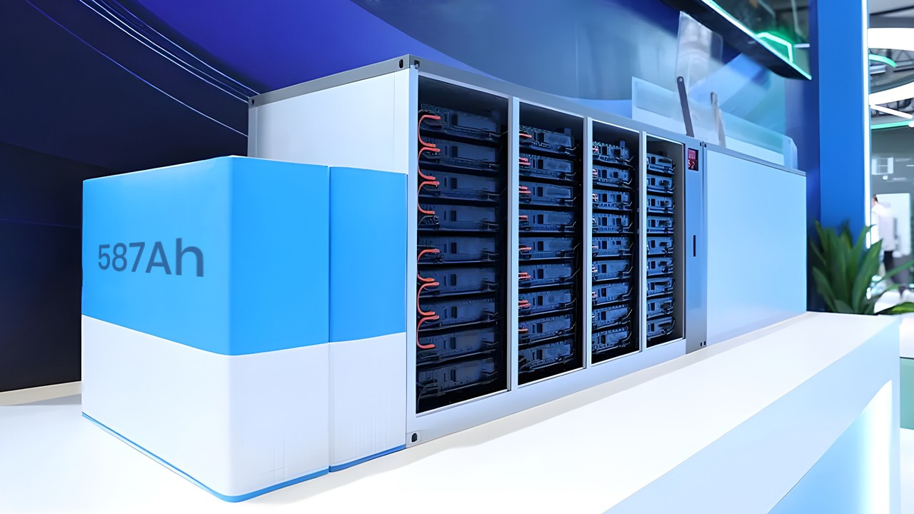
Commercial and industrial energy storage is the fastest-growing market. Factories, shopping malls, office buildings, and other commercial and industrial users install energy storage systems to save on electricity bills and provide emergency power. The high energy density and long lifespan of 587Ah cells perfectly meet the needs of commercial and industrial users for "space-saving and reliable" solutions.
Large-scale overseas energy storage projects are also beginning to adopt it. As Chinese energy storage companies accelerate their "going global" strategy, 587Ah cells are gaining favor with overseas customers due to their cost-effectiveness. By 2025, Chinese energy storage companies will have signed contracts for projects exceeding 30GWh overseas, many of which will utilize the new generation of high-capacity cells.
Manufacturer Strategies: The Battle for Dominance
The competition over the 587Ah format is not merely a race to produce the cell, but a comprehensive war of manufacturing efficiency, safety innovation, and system integration capability. The top-tier manufacturers—CATL, REPT BATTERO, Hithium, and EVE Energy—have each staked a claim to the 587Ah territory using distinct technical paradigms.
CATL: The "Real Energy" Benchmark and Super-Manufacturing
Contemporary Amperex Technology Co., Limited (CATL) officially announced the mass production and delivery of its 587Ah cell on June 10, 2025, during its Real Energy Technology Day. CATL’s strategy is built on the concept of True Value, arguing that the 587Ah cell strikes the ideal balance between regulatory compliance, station compatibility, and electrochemical performance.

Technically, CATL has pushed the volumetric energy density of the 587Ah cell to 434 Wh/L, a 10% improvement over its 314Ah predecessor. This was achieved through innovations in cathode material architecture, specifically high-density coating and the construction of fast-ion channels. Perhaps more significant is CATLs manufacturing throughput; its Jining facility in Shandong maintains a daily output of over 220,000 units, with a single cell completed in under two seconds. This scale has enabled a 42% reduction in production costs and a safety failure rate at the parts-per-billion (PPB) level.
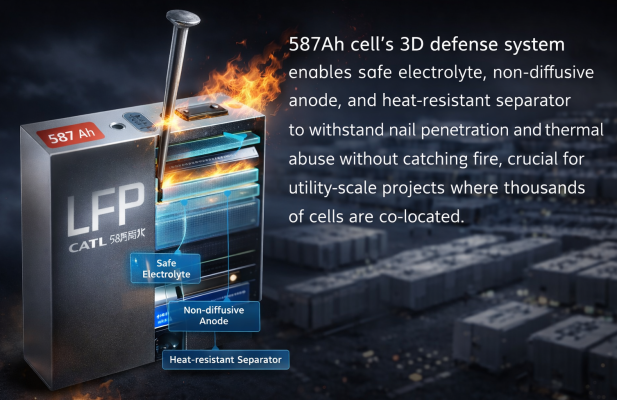
CATLs 587Ah cell also features a 3D defense system comprising a safe electrolyte, a non-diffusive anode, and a heat-resistant separator. This architecture allows the cell to withstand nail penetration and thermal abuse without catching fire, a critical requirement for utility-scale projects where thousands of cells are co-located. The success of this model is evidenced by the 2 GWh in shipments achieved by December 2025, with projections to reach 3 GWh by the end of that year.
REPT BATTERO: Wending Technology and Impedance Frontiers
REPT BATTERO competes in the 587Ah space (often designated as 588Ah in their internal documentation) by focusing on internal resistance and space utilization through its proprietary Wending technology. The Wending structure utilizes a patented top-cap design and seamless welding to eliminate traditional U-shaped tab bending, which increases internal space utilization by over 7%.
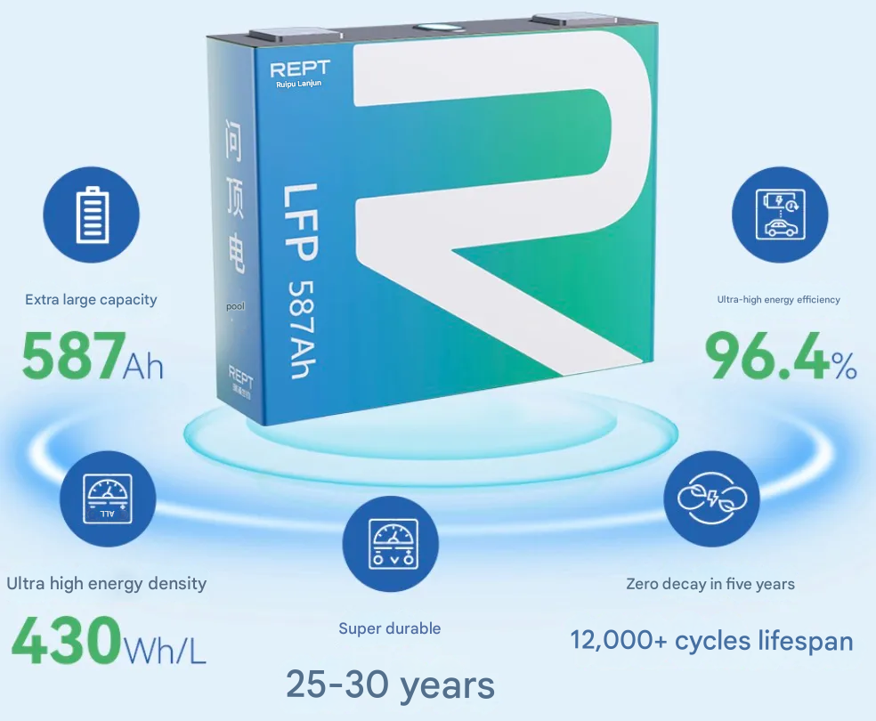
The performance implications of Wending technology are substantial. By shortening the tabs by 60%, REPT has reduced the direct current (DC) impedance by more than 10% and increased the ion migration rate by 30%. This low-impedance design directly addresses the primary challenge of large-format cells: heat generation. Lower internal resistance translates to a more stable temperature profile during high-power discharge, which is essential for reaching the 10,000 to 12,000 cycle life targeted by REPTs utility customers. REPT’s strategy emphasizes the replicable engineering solution, aiming to standardise the 587Ah interface to capture long-term market mindshare.
Hithium: Specialized Long-Duration Pathways
HiTHIUM Energy Storage has adopted a two-track approach, using the 587Ah ∞Cell as the foundational unit for 2-hour energy storage systems while scaling to 1175Ah and 1300Ah cells for 4-hour and 8-hour applications. Hithium’s 587Ah cell is derived from its 1175Ah platform, sharing the same ∞Pack and ∞Power architectures, which provides a high degree of modularity for integrators.

The technical differentiator for Hithium is its ultra-thick electrode technology. Traditionally, thick electrodes suffer from cracking, slow ion transport, and difficult electrolyte penetration. Hithium claims to have overcome these bottlenecks, enabling a reduction in foil and other dead weight component costs by more than 50% compared to traditional 2-hour cells. This focus on material efficiency has allowed Hithium to rank among the Top 2 globally for energy storage battery shipments in 2025, with its 587Ah products already being deployed in high-renewable penetration scenarios in Northwest China and Eastern Europe.
EVE Energy: The Scalability of "Mr. Big"
While CATL and Hithium focus on 587Ah, EVE Energy has pushed the envelope with its 628Ah Mr. Big (MB56) cell. The MB56 represents the upper bound of the current large cell race, offering a single-cell energy of 2.009 kWh. EVE’s strategy leverages extreme scale; its 60 GWh super-factory in Jingmen is designed to produce 600Ah+ cells at a rate of 1.5 units per second, supporting the manufacture of up to forty 5MWh containerized systems daily.
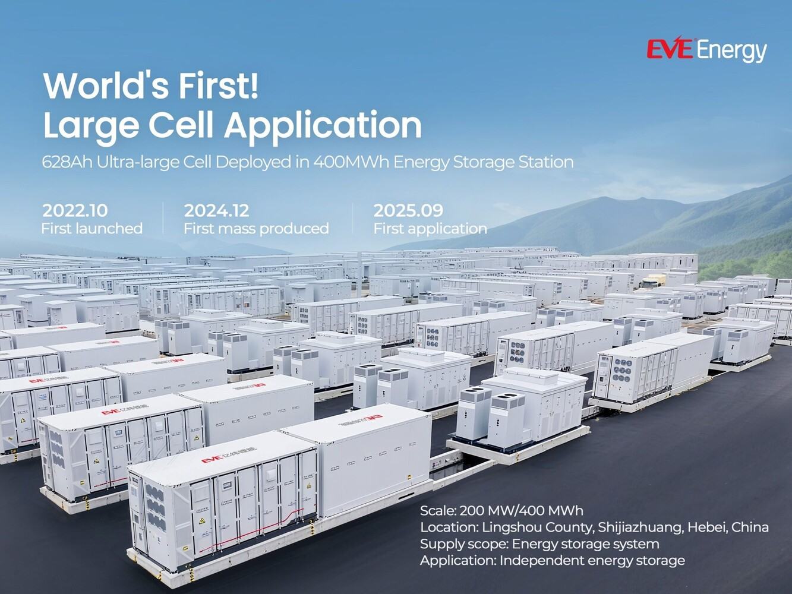
EVE successfully energized the world's first large-scale application of 628Ah cells in a 400MWh project in Lingshou, Hebei, in September 2024. This project demonstrated that 600Ah+ cells are capable of stable, grid-scale operation, though the 587Ah format remains more common for standard 20-foot 6.25MWh system integrations due to the aforementioned weight and layout advantages.
Manufacturing and the Parts-Per-Billion (PPB) Quality Standard
In the utility-scale sector, a 1 GWh project utilizes approximately 530,000 cells (if using 587Ah). Even a defect rate of 1 in 100,000 would lead to multiple failures per project. To combat this, Tier 1 manufacturers have moved toward the parts-per-billion (PPB) defect rate standard, supported by Lighthouse factories and AI-driven quality control.
Smart Manufacturing and Throughput
The production of 587Ah cells requires extreme precision in coating uniformity and stacking. CATLs Jining base utilizes a super-drawing process that not only speeds up production but also achieves a safety failure rate at the PPB level. Similarly, EVE Energy's super-factory incorporates over 80 equipment technologies to enable fully automated production, achieving a billionth-level precision in defect detection.
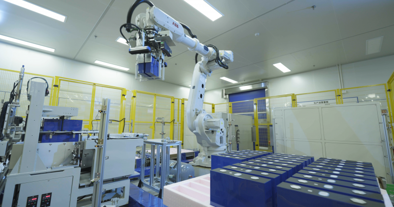
Hithium’s Xiamen manufacturing base utilizes AI-powered vision inspection across 13 stations, with 390 CCD sensors performing over 1,200 tasks per cell unit. These systems can detect defects as small as 0.3mm in the electrode coating or separator integrity, ensuring that every cell rolling off the line meets the 10,000+ cycle requirement.
Market Trajectories: The Standard War and Global Deployment
The competition over 587Ah is currently in a warlords vying for dominance phase, where manufacturers are racing to have their specific capacity format adopted as the industry benchmark. However, the 587Ah format has clearly taken the lead in the transition from 5MWh to 6.25MWh systems.
InfoLink 2025/2026 Shipment Analysis
Based on InfoLink Consulting’s 2025 data, the global energy storage cell market has reached 612.39 GWh, a 95% year-on-year increase. The utility-scale segment, which accounts for over 90% of this volume (556.74 GWh), is the primary driver of 500Ah+ cell demand.
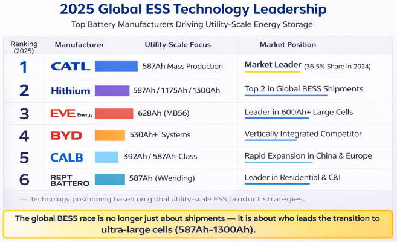
The 2026 forecast indicates that 500Ah+ cells will begin ramping up in late Q1 and will emerge as the main scale-up direction for utility-scale storage, with penetration projected to exceed 15% within the year.
Geographic Deployment and Project Specifics
The rollout of 587Ah and 600Ah+ cells has evolved from single-product exports to full system solutions and international standards.
- Middle East and North Africa (MENA): Hithium secured 4GWh of projects in Saudi Arabia utilizing its large-format cell technology, focusing on long-duration grid stability.
- Southeast Asia: CATL's 530Ah cells (part of the 587Ah family roadmap) are supplying a 4GWh BESS for Vena Energy in Singapore.
- Australia: EVE Energy signed a 2.2GWh order with EVO Power for 628Ah cells, highlighting the demand for high-capacity solutions in the Australian grid.
- United States: Despite regulatory shifts, the U.S. installed a record 57.6 GWh of storage in 2025, with manufacturers pivoting from EV lines to dedicated BESS production to meet the demand for 314Ah and 587Ah formats.
- Europe: Projects in Bulgaria and Romania are now featuring Hithium's 587Ah and 1175Ah cells for 2-hour and 4-hour configurations, respectively.
Future Roadmaps: kAh-level Cells, Sodium-ion, and Solid-State
While the 587Ah cell is the current "top performer," the battle for the next generation is already being fought in the lab and on pilot production lines. The industry roadmap points toward even larger capacities for dedicated long-duration energy storage (LDES) and the "dual-star" development of alternative chemistries.
The kAh Frontier (1000Ah - 1300Ah)
For applications requiring 8 hours or more of storage, manufacturers like Hithium have unveiled kAh-level cells. The ∞Cell 1300Ah, designed specifically for the 8-hour native ∞Power8 system, provides 4.16 kWh of energy in a single cell. This design reduces system component counts by over 30% compared to mainstream cells and utilizes ultra-thick electrodes to minimize the cost of non-active components like foils. Mass production for these 8-hour native systems is scheduled for Q4 2026.
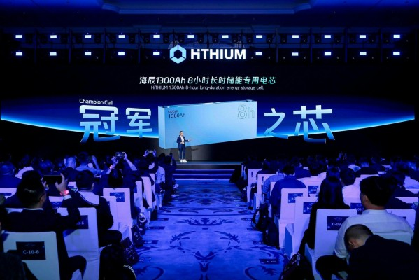
The Sodium-ion (Na-ion) Alternative
CATL has confirmed large-scale deployment of sodium-ion technology in 2026 across battery swap systems, commercial vehicles, and energy storage. Sodium-ion batteries, like CATL’s Naxtra brand, operate effectively across a wide temperature range (-40°C to 70°C) and reduce reliance on lithium resources. Analysts expect sodium-ion to develop in parallel with LFP as a dual-star trend, offering a safer and more resilient fit for cold-weather grid storage.
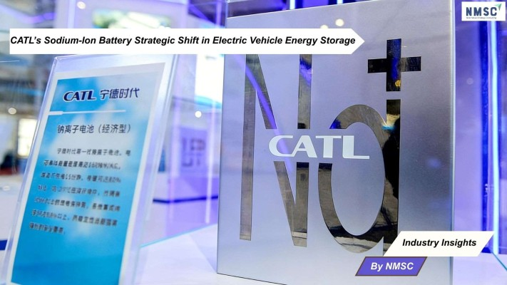
Solid-State Trajectories
All-solid-state batteries are projected to achieve mass production by 2030, though significant technical and cost challenges remain. EVE Energy expects to launch solid-state batteries for the hybrid field in 2026, with a target of 400Wh/kg energy density by 2028. These technologies aim to eliminate the flammability risks of current liquid-electrolyte cells, potentially redefining the safety standards of the entire industry.
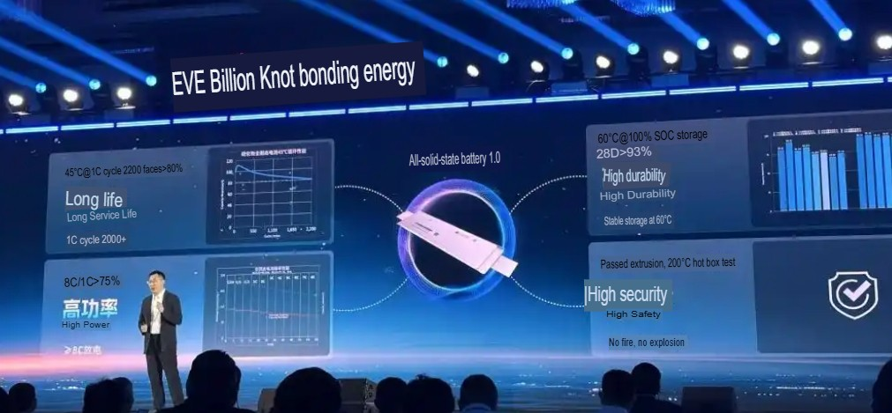
Final Analysis and Strategic Imperative
The emergence of the 587Ah cell marks a watershed moment in the professionalization of the energy storage industry. It is the first format to be truly system-native, designed from the outset to occupy the maximal electrical and physical envelope of a 20-foot shipping container while remaining within the legal and structural boundaries of global logistics.

The Battle for the Top Performer is no longer about who can boast the highest capacity on a datasheet. It is about who can maximize the certainty of revenue for every kilowatt-hour over a 20-year timespan. The 587Ah format has won this first round of the large-format war because it successfully reconstructed the BESS cost structure, reducing CAPEX through the quantity dividend and lowering LCOS through extreme cycle life and manufacturing efficiency.

For project owners and integrators, the 587Ah cell signifies that the rules of competition have been rewritten. The winners in the 2025–2030 era will be the system-level players who can master the full-lifecycle risks of these ultra-large cells—controlling initial costs while ensuring long-term stability and longevity. The 587Ah format is not just a parameter upgrade; it is the technical and industrial path that defines the future of global renewable energy integration.